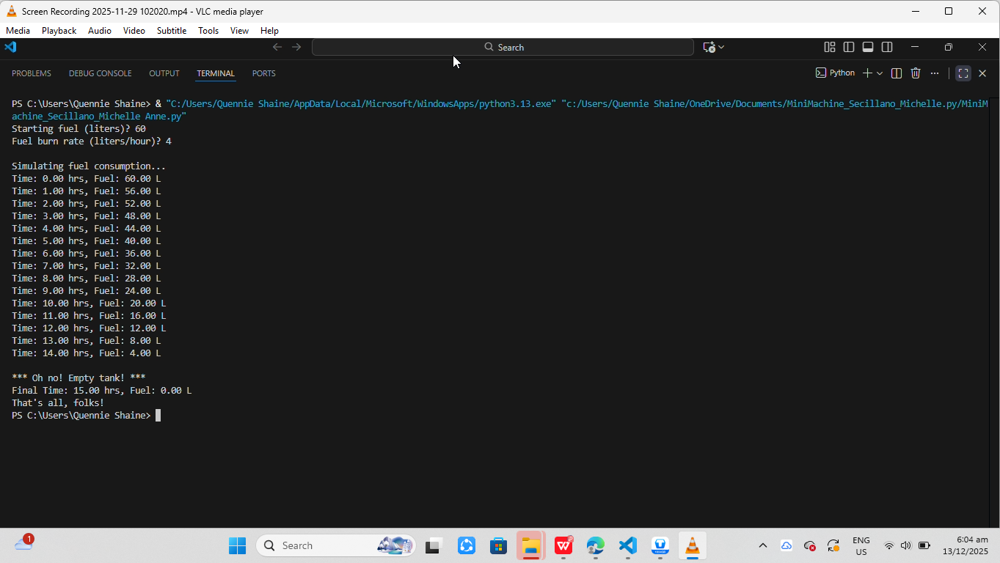

Projects

Project 1
This is the final project/exam in our major subject on linear algebra, we made a 3D helix spring using python matplotlib.

Project 2
This learning website is part of our research last year, we made a website just to fulfill the requirements in our subject practical research>

Project 3
This project aims to evaluate students’ ability to analyze, explain, and defend the behavior of Python programming constructs including loops, conditionals, functions, and recursion—within the context of a real-life computing problem. Students will design and implement a small “mini-machine” program that demonstrates their understanding of algorithmic thinking and highlights how the base case is identified and used to ensure correct program behavior, especially in recursive or iterative problem-solving.